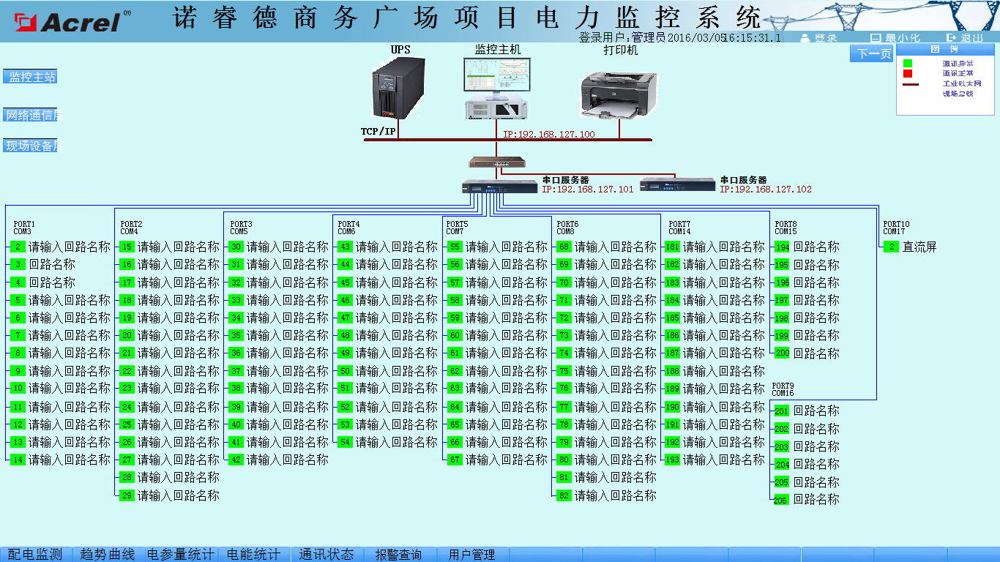
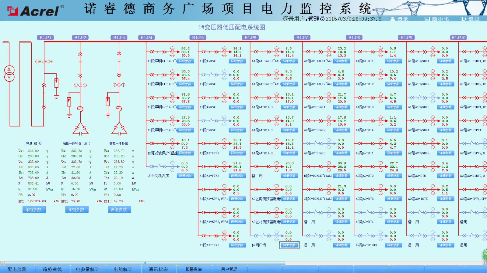

摘要：基于目前科学技术飞速发展，人们对电力资源的依赖越来越广泛，而现阶段国内电力系统的运营成本还相对较高，因此完善电力系统各方面的工作已经势在必行。电力监控系统在整个电力系统中具有重要的作用，它能够有力的促进电网管理工作效率，降低电力系统的运营成本，本文通过诺睿德商务广场项目中的应用介绍电力监控系统在商务广场中的应用。
关键字：电力系统；数据采集；商务广场 ；监控系统
0.前言
配电自动化，是一项集计算机技术、数据传输技术、控制技术、现代化设备及管理于一体的综合信息管理系统。其目的是提高供电可靠性，改善电能质量，向用户提供优质服务，降低运行费用，减轻运行人员的劳动强度。
随着电力网络的不断发展，用电负荷的持续增长，各种新型负载不断涌现，用户更加关注电能质量问题，同时也对电能质量提出了更加严格的要求。用户需要更加有效的电力监控管理解决方案来应对上述变化带来的挑战，以实现配电系统持续可靠、高效低耗的运行。本文通过对诺睿德商务广场项目电力监控系统的建设，介绍电力监控系统在商务广场中的应用。
1.项目概述及建设目标
诺睿德房地产开发集团股份有限公司是一家以房地产开发为龙头，集开发管理、运营、咨询服务为一体的多元化经营综合性企业集团，自成立以来秉承“一诺千金，大德蓄睿”的企业精神，树立了“诺睿德”房地产集团的品牌形象。
2013年集团全资投入26亿元打造诺睿德国际商务广场，成为年度主打产品。项目位于长春市EBD商核—净月西部新城中心区域，新城大街与天富路交汇处，占地面积约8.46万平方米，是集团合资环球贸易中心、明宇广场、凯旋国际公馆后的又一独资升级版大型现代高端城市综合体，为净月商务区与净月高端住宅的有机结合提供强有力的支持。项目集5A级写字间、东北首家川渝文化主题商街、高端配套住宅、办公SOHO，精品酒店五大业态，互为补充和配套。诺睿德国际商务广场聚合城市优质资源的同时，矢志将项目打造成真正的一站式生活城，满足现代都市人群对居住以及物质生活的高端需求。
2.电力监控系统的设计
在监控系统的设计中，要充分考虑客户的实际需求，以及电力系统的实际结构、电力系统的实际载荷能力等因素，进而合理的选择监控设备，这既有利于减少系统运作的成本，同时也有利于系统功能的实现。
本项目的电力监控系统，可以实现对广场内低压配电回路的实时监控，有利于电能管理。另一方面，电力监控系统不仅能够准确的表示出回路的用电状况，它还具备网络通讯等功能，能够与计算机、串口服务器等设备进行组合，及时的显示广场内各个配电回路的运作状态，当广场内电力系统的负载越标时，电力监控系统能够迅速报警，发出语音提示。另外，电力监控系统还能够生成报表、曲线图等统计信息，便于有关人员分析广场内各部分的用电状况，使广场内的用电活动更加安全，从而保证广场内人员的生命安全，提高工作人员的工作效率。
2.1 系统结构
依据新建商场的配电情况分布情况，在线监测系统建设采用分层分布式结构，系统包括：站控管理层、网络通讯层、现场设备层。系统网络结构如图所示：
站控管理层管理人员与计算机进行人机交互的直接窗口，对采集的现场各类数据信息计算、分析与处理，并以图形、数显、声音等方式反映现场的运行状况，是系统的最上层部分。主要由系统软件和必要的硬件设备，如工业级计算机、打印机、UPS电源等组成。
通讯层使用的设备为NPORT5630-16串口服务器。该层是数据信息交换的桥梁，负责对现场设备回送的数据信息进行采集、分类和传送等工作的同时，转达上位机对现场设备的各种控制命令。
现场设备层主要是连接于网络中用于电参量采集测量的各类型的仪表等，也是构建该配电系统必要的基本组成元素。现场配置安科瑞的微机保护、电能表，实现高、低压回路三相电流、三相电压、频率、功率、四象限电能等电参量监测、保护动作信息；并对每个回路断路器分合闸状态进行监测。
2.2 网络设计
电力监控系统中的网络系统能够及时的对数据进行传输，并迅速传递操作指令，是实现电力监控系统各项功能的基础。把现场每个设备就地与总线连接，之后在把各条总线全部接入通讯网关，来实现与主机的传递。
2.3监控系统软件功能设计
系统依据客户实际需求进行设计，并实现了一次主接线图界面显示；电参量遥测及电参量越限报警；事件记录；系统运行异常监测；故障报警及操作记录；报表查询与打印；系统负荷实时、历史曲线，用户权限管理等主要功能。
2.3.1数据的采集与处理
数据采集主要包括模拟量以及开关量的采集。模拟量的采集主要是对线路电压、电流、功率、功率因数、频率等信息进行采集，开关量的采集则主要是对断路器、隔离开关、接地刀闸等设备的工作状、保护动作信息，以及断电保护、运行故障等报警信息进行采集，实现远程数据的本地实时显示。数据处理主要是把按要求采集到的电参量实时准确的显示给用户，达到配电监控的自动化化和智能化要求，同时把采集到的数据存入数据库供用户查询。
2.3.2数据记录
电力监控系统的数据记录功能主要就是对断路器分合状态以及保护动作的前后顺序进行记录，它要求系统中必须有足够的内存空间，进而长时间的、大量的对数据信息进行记录和存储。其次，电力监控系统的数据记录功能也包括对故障信息的记录，即对故障发生时的实时电流、实时电压等数据进行记录存储。由此可见，数据记录功能可以通过对保护装置工作状态的记录，以及对故障信息的记录，准确的反映出系统中存在的问题，从而便于工作人员解决。
2.3.3电能管理
为了实现对本广场内各回路用电量的监管，系统设计了电能管理报表，系统通过对有功电度的采集，按照回路名称的不同，自动生成日报表、月报表和年报表并有报表打印功能，并可对某一回路的某一时间段内的用电量进行查询，可以帮助物业建立有效的用能管理考核制度。通过系统约了能源消耗。
3.供配电设计中应用电力监控系统的意义
综上所述，电力监控系统帮助用电单位提高效率、减少损失、降低运营成本，电力监控系统能够有效确保电网管理效率、缩小电力运营成本，也成为供配电设计中不可或缺的重要组成部分。电力监控系统的通信、故障报警、数据存储记录等功能使得工作人员在实际工作中更加方便，可以通过人机操作界面, 直接了解到电力系统的运行状态,并能迅速传递出操作指令，由于监控设备对数据的传递都是通过网络传输来实现，因此，不同的电力监控系统可以设计不同的组网方式,确保数据信息能够迅速、精准的进行传输。另一方面，在供配电设计中运用电力监控系统，应该根据实际情况选择监控设备。一般的电力监控系统通常都采用具有远程通信、远程观测以及远程控制等功能的设备，而一些高端电力监控系统则需要选择功能更加齐全的智能设备。
在商业建筑等场所设置电力监控系统，可以实现对广场内低压配电回路的实时监控，有利于电能管理。另一方面，电力监控系统不仅能够准确的表示出回路的用电状况，它还具备网络通讯等功能，能够与计算机、串口服务器等设备进行组合，及时的显示广场内各个配电回路的运作状态，当广场内电力系统的负载越标时，电力监控系统能够迅速报警，发出语音提示。另外，电力监控系统还能够生成报表、曲线图等统计信息，便于有关人员分析广场内各部分的用电状况，使广场内的用电活动更加安全，从而保证广场内人员的生命安全，提高工作人员的工作效率。
参考文献
[1]《电力电测数字仪表原理与应用指南》， 任致程、周中，中国电力出版社
[2]《电力监控系统在供配电设计中的应用》，高士宏，科技风